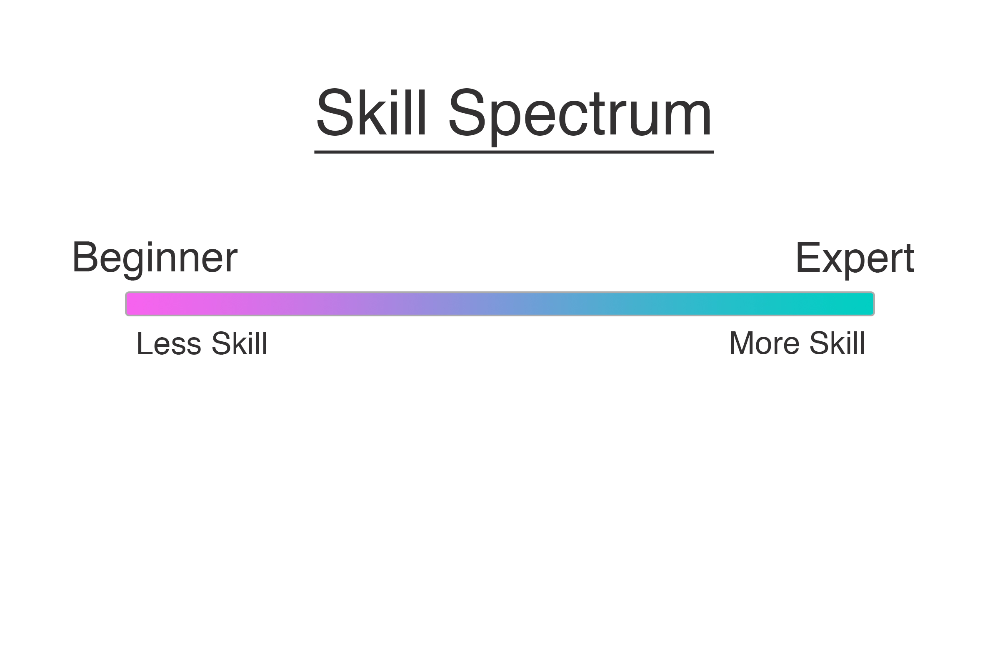

So What's Next
Paul Logston
@PaulLogston
plog.logston.me
The Questions I Get
I'm done with Learn Python the Hard Way, so what's next?
- What's a good project to build my Python skills?
- What book should I read to become a better Python Programmer?
- What's an intermediate level programmer?
Assumptions I Made
- Familiar with the concepts in Learn Python the Hard Way but not much more.
Map
Where are we?
Linear model 1 (beginner at one end and expert at the other)
Map
Where are we?
Linear model 2 (beginner at one end and infinity at the other end)
First 5% is beginner and last 5% is expert.
Map
Where are we?
Ball and stick model 3 (Basics -> Specifics?)

Map
Where are we?
Ball and stick model (Basics -> All differnt types of subjects)

Map
Where are we?
Combining the graphs from before...

Map
Where do we want to be?

My Approach to Answering the Question
I asked several self-proclaimed and personally opinioned intermediate to expert level programmers these questions.
Responses
Describe an intermediate level programmer?
- Knows most __builtins__.
- Can write clean code.
- Needs less direction than a beginner programmer but more direction than a senior programmer.
Responses
What did you do that caused you to grow out of beginnerhood?
- Review Code
- Pursue you own projects outside of work projects.
- Learn on your own.*
- Ask questions - What is more pythonic? - What's easier to maintain and why? - What would perform better?
My Perspective
Where to go from here?
- Create a project for your self that will stretch your skill set.
- Review code and get your code reviewed (Reviewing Buddy)
BIG THANKS
Many Many Thanks to all who I interviewed for this talk.